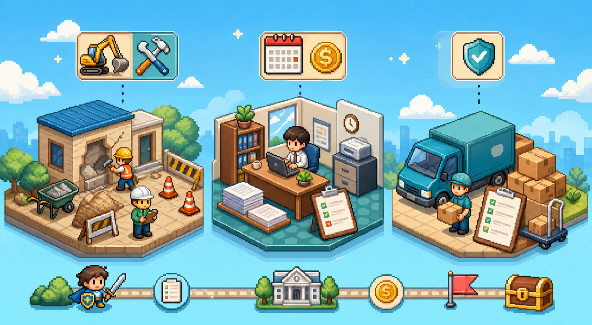

오늘 바로 할 공부만 먼저 보이게 정리했습니다. 자세한 암기, 문제, 법령, 실무 연습은 위 탭에서 이어갈 수 있어요.
교재와 예제문제는 2026년 시험 준비에 맞춰 작성되었지만, 앱 안의 기존 문항 일부는 현재 법령 기준과 달라 보이는 항목이 있어 해설에 정정 표시를 넣었습니다.
| 확인 자료 | 앱 반영 내용 |
|---|---|
| 국가계약법 시행령 개정 정보 | 제42조제4항의 종합심사낙찰제 기준이 300억원에서 100억원으로 바뀐 점을 반영 |
| 2026 계약예규 협상에 의한 계약체결기준 | 협상 성립 후 계약체결 기한을 10일로 반영 |
| 건설산업기본법 현행 조문 | 종합공사 업종 등록 건설사업자에게 하도급 제한되는 공사금액 기준을 10억원 미만으로 반영 |
| 첨부 공개 예제문제 | 정답이 별도 제공되지 않은 6문항에 해설과 최신 정정 메모를 추가 |
예전 암기와 현재 정리가 충돌하기 쉬운 것만 모았습니다. 문제 해설에는 “현재 기준 변경됨” 문장을 붙이면 좋아요. 확인 기준일은 2026-05-29입니다.
과목별로 자주 묶이는 법령을 먼저 보고, 그 아래 설명 주제를 훑는 탭입니다. 문제 풀이 전에 “어느 법에서 나온 숫자인지”를 잡는 용도입니다.
교재별 목차를 트리처럼 열어보는 공간입니다. 장, 절, 항목, 세부 확인사항이 차례로 펼쳐지도록 정리합니다.
기간, 퍼센테이지, 금액 기준, 계산식을 한 탭에 모았습니다. 숫자 문제는 보기 하나만 바꿔도 오답이 되기 쉬워서, 헷갈리는 단위와 예외를 같이 붙였습니다.
시험장 들어가기 전에는 길게 읽기보다 “숫자 → 바뀐 포인트 → 함정 문장 → 실기 답안 뼈대” 순서로 훑는 게 좋습니다. 답은 눌러서 확인하게 만들었어요 🙂
1회독: 숫자만 훑기 → 2회독: 빨간 함정만 보기 → 마지막: 실기 답안 첫 문장 구조 외우기. 모르는 카드는 바로 문제 탭의 오답노트로 넘겨서 다시 보면 됩니다.
실기는 “아는 듯한데 첫 문장이 안 나오는” 게 제일 무서워서, 숫자·절차·답안 문장 뼈대를 직접 채우게 만들었습니다. 틀려도 괜찮아요. 여기서 틀리면 시험장에서는 덜 틀립니다 🙂
오답노트에 쌓인 문제를 과목·법령·유형별로 자동 묶습니다. 많이 틀린 줄부터 잡으면 공부가 좀 덜 막막해져요 🙂
보기에서 말장난하기 좋은 개념만 묶었습니다. 시험 직전에는 왼쪽/오른쪽 차이와 “출제 함정”만 보면 돼요 🙂
공사·용역·물품별로 “지금 단계에서 뭘 챙겨야 하지?”를 빠르게 확인하는 탭입니다. 체크한 상태는 이 브라우저에 저장됩니다 🙂
예산 확보부터 하자보수까지, “담당자라면 다음에 뭘 누를까?” 하는 느낌으로 따라가면 됩니다. 너무 무겁게 말고, 흐름 먼저 잡아봐요 🙂

객관식 문제, 실기 서술형, 오답노트를 한곳에 모았습니다. 오늘 컨디션에 맞춰 하나씩 골라 풀면 됩니다 🙂
150문항 문제은행에서 30문제씩 섞어 풉니다. 정답 확인 후 틀린 문제는 오답노트에 자동 저장됩니다.
실기는 상황을 읽고 절차, 법령, 숫자, 문서 포인트를 답안처럼 쓰는 연습이 중요합니다. 각 문제의 모범답안을 펼쳐서 키워드를 비교하세요.
틀린 문제가 최근순으로 저장됩니다. 다시 풀어보면서 약한 부분만 집요하게 잡아봅시다.